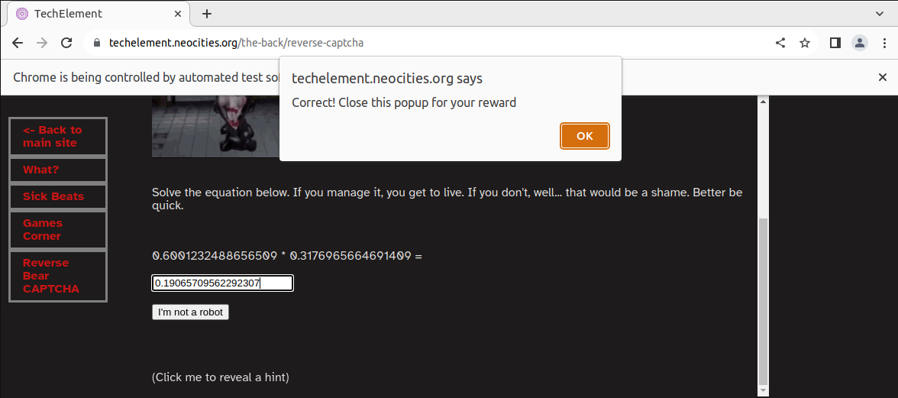

Escaping the Reverse Bear CAPTCHA
Or, an absolute beginner's guide to using Selenium and Python
Somewhat recently I watched Saw, and, in an entirely
normal human decision, decided to put a Saw trap of my
own on this very site. If you've not already seen it,
it's in the-back.
(or, less cryptically, here.)
What it is is a form that wants the answer to a
mostly-randomly generated maths problem. If you get
it wrong, or are too slow, it gets sad. There is no way that as a
human being you will be able to read the question,
solve it, and type in the answer in the one second
you're given. So, how do you do it?
Web scraping time
Web scraping is the act of using a machine to get
the content of a webpage. We're going to be using Selenium, which is “a suite of tools used for automating web browsers”, their words. It lets us scrape pages and, importantly, interact with them automatically.
Also, if you know a more efficient/more fun/otherwise
different way of doing it, by all means tell me! I am
only using Selenium because I made the Saw trap to
more or less force me to learn the basics of Selenium.
from selenium import webdriver
url = "https://techelement.neocities.org/the-back/reverse-captcha"
driver = webdriver.Chrome()
driver.get(url)
We start off setting things up.
A WebDriver is an API used to interact with a
specific browser. It means you don't have to write slightly different code to make sure it works for every single implementation of the browser, you just need to use a different WebDriver.
You'll see when we run the finished code that Selenium will open itself up a Chrome browser to the URL we gave it, just as specified.
equationElement = driver.find_element("id", "equation")
textBox = driver.find_element("id", "ans")
sendButton = driver.find_element("xpath", "//button")
Here we start finding parts of the webpage's HTML to interact with.
Selenium lets you do this multiple ways. ID is straightforward enough - there should be exactly one HTML element with any given ID, and we send Selenium off to find it. This requires knowing the IDs of the desired HTML elements, which means it's off to InspectElement to find out what they are!
XPath is more dynamic, you can search by the absolute path of the object in the page (eg, the third option of the first form), or by the attributes it has (eg, the form option with the text “Earth”). In this case, we're selecting the button. It's a very vague search, but since there's only one button on the page, it works fine.
eqText = equationElement.get_attribute("innerHTML")
eqTextCut = eqText[:-2]
So we got the equation on the screen, but the thing is we don't need the entire thing. We don't need to know the full details of the HTML, just what text it displays to the reader. First, we get the inner HTML, aka the text:
0.5326941760300602 * 0.29286404810724576 =
Then, we chop the final two characters off the end, because we don't need the “ =” for our next step
0.5326941760300602 * 0.29286404810724576
textBox.send_keys(eval(eqTextCut))
sendButton.click()
input()
eval(eqTextCut) takes a string, in this case the multiplication from earlier, and treats it like a mathematical equation, returning the answer as an integer. Selenium then types the answer into the text box, and presses the I'm not a robot button.
(input() is there to stop Selenium automatically closing the page once it's done, instead waiting for the enter key to be pressed in the Python terminal.)

Hacker voice: we're in.
bloop